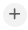

Work with Articles¶
Alation Cloud Service Applies to Alation Cloud Service instances of Alation
Customer Managed Applies to customer-managed instances of Alation
An article is a document object in Alation. Articles can be created to record any useful information about your data objects: from extensive descriptions of concepts to procedures or how-to tips. You can share your Articles for the benefit of your colleagues and invite others to collaborate on the content.
To systematize the Articles, you can organize them into a taxonomy.
Viewing¶
You can find shared Articles using Search. You can also see all shared Articles as a sorted list or as Taxonomy under Articles in the left-hand Navigation Menu. To view a specific article, click its title.
Note
If Articles are mentioned in Conversations, in other Articles, or are added as Field values, you can open them by clicking their title anywhere in Alation.
List¶
The List view displays Articles sorted either alphabetically or chronologically. To switch between sorting options, click the sorted by value then click the sorting option you prefer: newest or name. In addition to sorting, you can filter the list using the text filter.
Taxonomy¶
The Taxonomy view displays Articles as taxonomies listed alphabetically by the title of the main parent Article. Taxonomies are created by adding children to a top-level article. Children can be either articles or tables; child articles, in turn, can have children of their own, so that taxonomies can be several layers deep:
Create an Article¶
Articles can be created by users with any role other than Viewer. To create a new Article:
In the left-hand Navigation Menu, go to Articles and click . The new Article page will open on the right.
In the Title field, type the title. New Articles are created based on the default Article Template. You may want to change the Template to structure your content in a better way.
Hover over the Properties field on the right to reveal the Wrench icon next to the Template label. Click it to open the list of Article Templates available in your catalog.
Note
Article Templates define the type and number of Fields that you find on the catalog page of an Article. A Field can be viewed as a “building block” for the Template. The Template is a set of Fields that best suit the type of content you are creating. For example, you might use a “customer segment” template for documenting terms for an article group on a marketing campaign and a different “Best Practices” Template for tips on querying a Data Source.
Article Templates can be created by users with Server Admin or Catalog Admin roles. For details on creating Article Templates, see Build Custom Templates for Articles.
Fill out the Fields on your Article page. For details on types of Fields, see Creating Custom Fields for Catalog Pages.
To add to or create a taxonomy, either add a child by clicking in the Children field and selecting a child article from the list that appears, or find the article that you believe would be a good parent for your new article and add your new article as a child to that one. You must have access to the parent article to edit it.
Where necessary, save the changes to the Fields by clicking Save in the top right corner of the Field panel.
Formatting Text¶
For blocks of text, your Article Template will include the Rich Text type of Fields. You will see a panel with basic formatting functions on top of the editable area of Text Fields. You can also embed objects such as the following:
Links
Tables
Emoticons
Images
Video files
To customize the basic HTML of the text input, on the formatting panel, click to open the HTML code of the input.
@-mentioning¶
In an article, you can reference any Alation object, such as a User, a Data Source, or a Query, by @-mentioning it in the text field. To mention an object, type the @ symbol in the text field. The list of objects to select from will open.
For Tables, Views, Queries, and Query results, the preview of the object will be available after you save the Field. To see the preview, click the Expand icon [+] that comes after the title of the mentioned object.
Note
When you @-mention an object in an article, the article will be automatically added to the Relevant Articles field on the catalog page of the mentioned object.
Miscellaneous How-To’s¶
Viewing Table and Query Previews in Articles¶
You can view previews by clicking the [+] link at the end of the table or query name:
This will expand the table or query for viewing:
Editing¶
You can edit Articles you created or the Articles you have Edit access to. To edit an article:
Open the Article catalog page.
Hover over the title of the Field you want to edit to reveal the Edit icon. The image of the Edit icon depends on the type of Field you are editing. For example, it can be Edit for Text, for Object Sets, a list for List Values or a calendar icon for Dates. Click it to edit the field value.
Attachments¶
You can attach files to your article in the Attachments Field of the Article Template.
Deleting¶
To delete an article, in the top right corner of the article page, click More and then click Delete. In the Confirm Delete dialog that opens, click Yes to confirm the action. Your article will be deleted from the catalog.
Version History and Restoring Versions¶
Alation stores Version History for Articles. A version is a saved snapshot of an Article having a saved update to the value of an editable Field. To view Version History:
On the catalog page of an Article, in the upper right, click More and then click Version History. The Version History dialog opens. It has information on the user who made the change, time of the change, and the View Snapshot link for each version.
Click View Snapshot for a version to open and view its page.
To exit the snapshot view, in the Viewing Snapshot panel above the Title, click Exit View.
You can restore an older version of an article and in doing so, override all newer edits. You need to have Edit access to the article to be able to restore. To restore an older version:
Open the Version History of the article and click View Snapshot for the version you want to restore. The snapshot view will open.
In the Viewing Snapshot panel under the title, click Restore. The version you are viewing will be restored as the current version of the article.
Note
Some older versions cannot be restored. For example, it is not possible to restore a version that uses a different Article Template.
Article Groups¶
Articles can be organized into collections, or article groups. For more on article groups, refer to the section Article Groups.